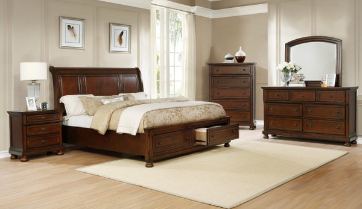

Williams-Sonoma

Williams-Sonoma, Inc., has become virtually synonymous with home furnishings through its mail-order catalogs and retail stores. In slightly more than 40 years, Williams-Sonoma has grown to a $1.8 billion company, making it a leading U.S. retailer in specialty home furnishings. Retail store sales, through more than 380 stores in the company's four chains--Williams-Sonoma, Pottery Barn, Pottery Barn Kids, and Hold Everything--accounted for 57.2 percent of annual sales in fiscal 2001. Catalog sales, through the Williams-Sonoma, Pottery Barn, Pottery Barn Kids, Pottery Barn Bed + Bath, Chambers, and Hold Everything catalogs, which ship more than 233 million catalogs each year, accounted for approximately 42.8 percent of sales. In collaboration with Time-Life Books, Williams-Sonoma also publishes the Williams-Sonoma Kitchen Library Series. Published since 1992, the cookbooks in the series feature a single subject, simple recipes, and lavish photographs, and are a best-selling series in the United States.
Williams continued to handle the purchasing and merchandising, while Marcus brought in a team of executives to guide the company's business end. A second store was opened in Beverly Hills by 1973. In that year, the company brought out its first mail-order catalog. As Williams told Gentry, the catalog was "a learning experience. We found that we could sell items by catalog that wouldn't sell in the stores. We could tell a story that couldn't be explained in the store, especially where the item and its use weren't intuitively obvious." Unlike in the stores, where customers merely saw the products on the shelf, the catalog, called A Catalog for Cooks, featured photographs of the products in use. The first mailing of the catalog went to 5,000 people. Sales took off, and the catalog's mailing list quickly went nationwide.